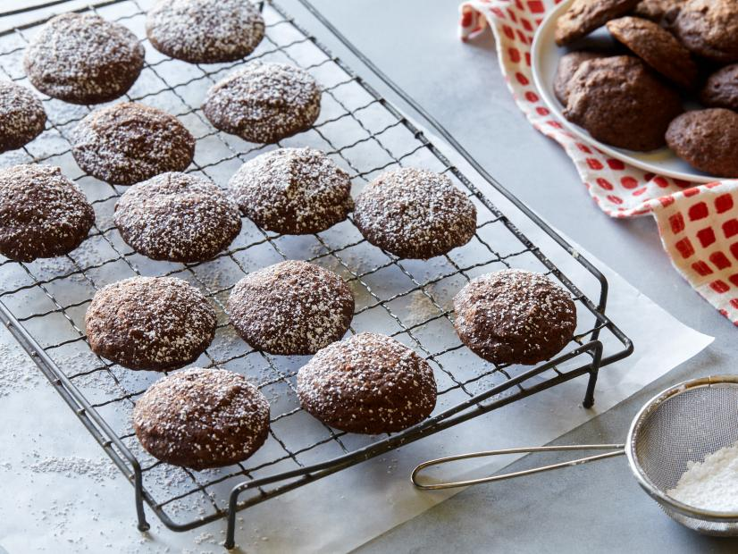

Brownie Cookies

The perfect mix of brownies and cookies
These rich, fudgy brownie cookies are a chocolate-lover's dream that just melt in your mouth.
When something mixes up in one bowl in just a few minutes there's no excuse not to whip some up!
Ingredients
- 4 ounces baking chocolate (unsweetened or bittersweet)
- 2 cups granulated sugar
- 2 sticks salted butter, softened
- 3 large eggs
- 1 tablespoon vanilla extract
- 2 1/4 cups all-purpose flour
- 1/4 cup plus 1 tablespoon cocoa powder
- 1 teaspoon baking powder
- 1/2 teaspoon kosher salt
- Powdered sugar, for dusting
Steps
- Preheat the oven to 350 degrees F and line a baking sheet with a silicone baking mat or parchment paper.
- Put the chocolate in a microwave-safe bowl and melt it in the microwave. Stir and let cool.
- Using an electric mixer, mix together the sugar and butter in a large bowl until totally combined. With the mixer on low, slowly drizzle in the cooled chocolate. Scrape the bowl and mix again. Mix in the eggs one at a time, then the vanilla. Scrape the bowl once more and mix.
- Combine the flour, cocoa powder, baking powder and salt in a bowl and stir it together. Add it in scoops to the mixing bowl with the mixer on low. Scrape the bowl once and mix one final time until all combined.
- Scoop generous tablespoons of the dough onto the prepared baking sheet, then bake until the cookies are poufy and set, 11 to 12 minutes. Let them sit on the baking sheet for 1 to 2 minutes, then remove them to a wire rack to cool completely. Repeat with the remaining dough.
- Once cool, sprinkle generously with powdered sugar.